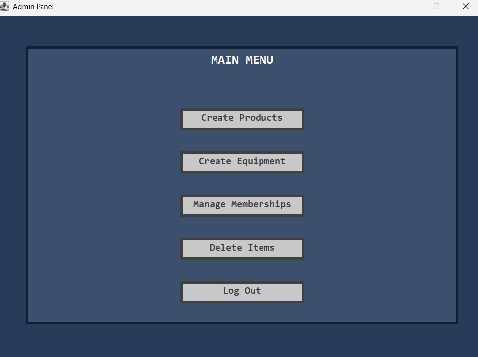
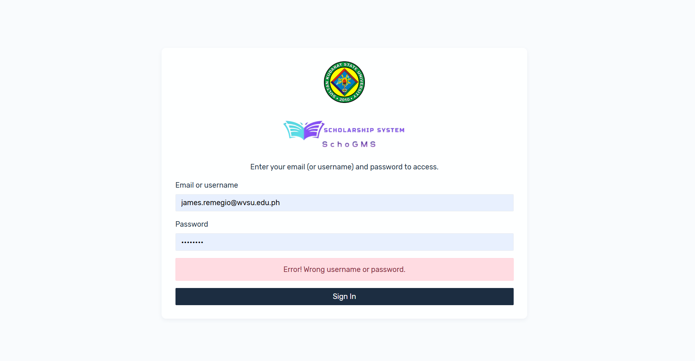
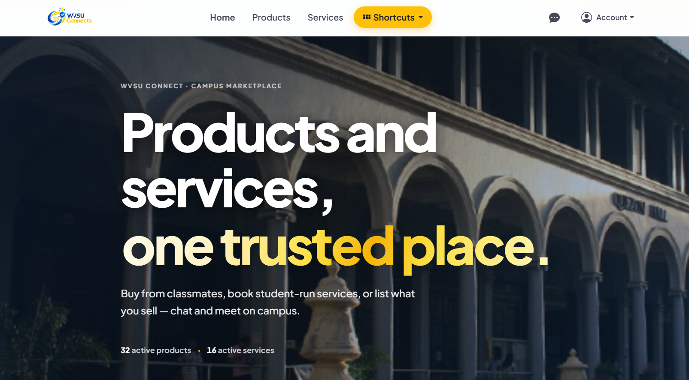
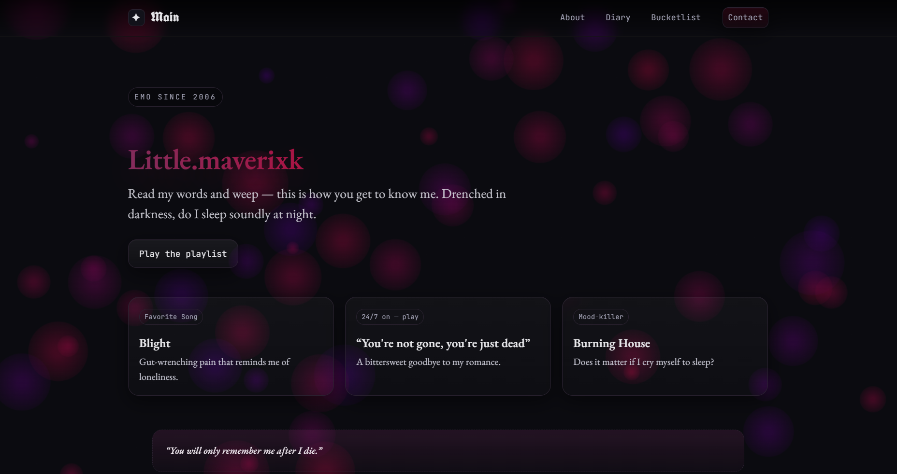
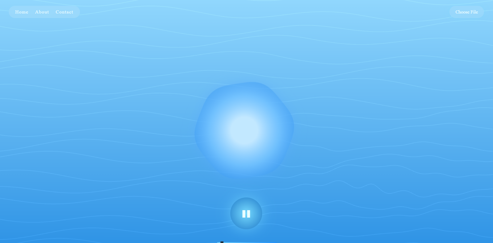

West Visayas State University
Bachelor of Science in Information Technology · College of Information and Communications Technology
Expected Graduation: 2028
Portfolio
BS Information Technology 3rd Year tracked in Cybersecurity and currently studying Networking.
I am a Bachelor of Science in Information Technology 3rd Year student from West Visayas State University. My academic journey has been centered on cybersecurity and networking, with my projects providing practical experience in backend development, databases, web applications, and full-stack development.
I am continuing to strengthen my foundations in programming and systems development while working toward a future in cybersecurity and networking.
Bachelor of Science in Information Technology · College of Information and Communications Technology
Expected Graduation: 2028
Senior High School · STEM Strand
Graduated: 2024
Graduated with Honors
API Developer
Inventory and management kiosk system designed for gaming cafes, with a focus on managing operational data and inventory through a structured application backend.

Technologies: Java, SQL
Back-End Developer
Web-based scholarship and grants management system for state universities, built to support the handling and organization of scholarship-related information.

Technologies: PHP, MySQL / MariaDB
Back-End Developer
Campus-wide marketplace for students, designed to provide a platform for student-to-student listings and transactions within the university community.

Technologies: Bootstrap, PHP, MariaDB / MySQL
Full-Stack Developer
A personal project for Playlistz that combines interactive web development with audio visualization, creating a dynamic interface around music and playlists.


Technologies: React, JavaScript
For academic collaboration, project discussions, or professional opportunities, you can reach me through my university email.
kliumaverick.villanueva@wvsu.edu.ph